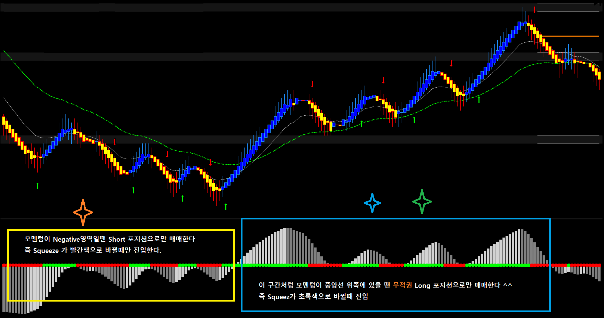

움직임이 안정적이라 매매가 쉬운 또하나의 선물이 콩 선물(ZS) 하루 거래량이 15만 계약 정도로 갠춘하고 장이 열리는 시간도 짧아서 집중해서 매매할 수 있는 선물이다. 콩 선물은 손절을 좀 넉넉하게 잡을 수 있어서 매매하기 좋은 선물이다. 크루드 오일이나 금처럼 미친듯이 발광하는 선물이 아니라 편안하게 매매할 수 있는 선물이다. 아래 차트 매매기법으로 매매하면 억수로 겁나 돈을 잘 벌 수 있다.
